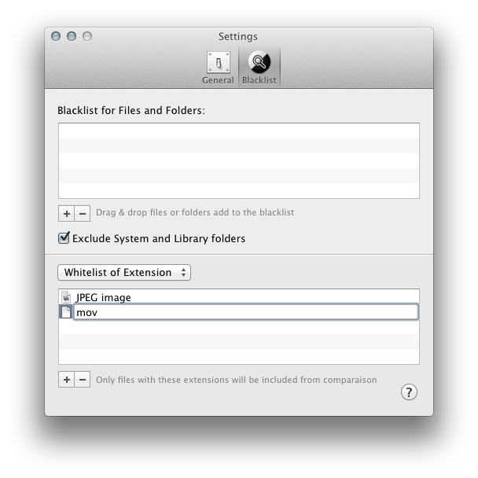

You can exclude folders from comparison, just drag or click on "
+" to add folders to exclude.
System folder ("/System/") and
Library folders ("/Libray/" and "~/Library/") are, by default, exluded from the analyze.
You can exclude or include type for files by adding the extension of files, for example, you can type "jpeg" to exclude/include all JPEG files. You can choose:
- Blacklist: All filetypes will be excluded from comparison.
- Whitelist: Only filetypes from this list will be included into the comparison.